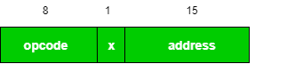

Simplified Instructional Computer (SIC) is a hypothetical computer that has hardware features which are often found in real machines. There are two versions of this machine:
- SIC standard Model
- SIC/XE(extra equipment or expensive)
Object program for SIC can be properly executed on SIX/XE which is known as upward compatability.
SIC Machine Architecture/Components –
- Memory –
- Memory is byte addressable that is words are addressed by location of their lowest numbered byte.
- There are 2^15 bytes in computer memory (1 byte = 8 bits)
3 consecutive byte = 1 word (24 bits = 1 word)
- Registers –
There are 5 registers in SIC. Every register has an address associated with it known as register number. Size of each register is 4 bytes. On basis of register size, integer size is dependent.I. A(Accumulator-0): It is used for mathematical operations.
II. X(Index Register-1): It is used for addressing.
III. L(Linkage Register-2): It stores the return address of instruction in case of subroutines.
IV. PC(Program Counter-8): It holds the address of next instruction to be executed.
V. SW(Status Word-9): It contains the variety of information
Status Word Register:
- mode bit refers to user mode(value=0) or supervising mode(value=1). It occupies 1 bit.[0]
- state bit refers whether process is in running state(value=0) or idle state(value=1). It also occupies 1 bit.[1]
- id bit refers to process id(PID). It occupies 3 bits.[2-5]
- CC bit refers to condition code i.e. It tells whether device is ready or not. It occupies 2 bits.[6-7]
Mask bit refers to interrupt mask. It occupies 4 bits.[8-11] - X refers to unused bit. It also occupies 4 bits.[12-15]
- ICode refers to interrupt code i.e. Interrupt Service Routine. It occupies the remaining bits.[16-23]
- Data Format –
- Integers are represented by 24 bit.
- Negative numbers are represented in 2’s complement.
- Characters are represented by 8 bit ASCII value.
- No floating point representation is available.
- Instruction Format –
All instructions in SIC have 24 bit format.
- If x=0 it means direct addressing mode.
- If x=1 it means indexed addressing mode.
- Instruction Set –
- Load And Store Instructions: To move or store data from accumulator to memory or vice-versa. For example LDA, STA, LDX, STX etc.
- Comparison Instructions: Used to compare data in memory by contents in accumulator. For example COMP data.
- Arithmetic Instructions: Used to perform operations on accumulator and memory and store result in accumulator. For example ADD, SUB, MUL, DIV etc.
- Conditional Jump: compare the contents of accumulator and memory and performs task based on conditions. For example JLT, JEQ, JGT
- Subroutine Linkage: Instructions related to subroutines. For example JSUB, RSUB
- Input and Output –
It is performed by transferring 1 byte at a time from or to rightmost 8 bits of accumulator. Each device has 8 bit unique code.
There are 3 I/O instructions:- Test Device (TD) tests whether device is ready or not. Condition code in Status Word Register is used for this purpose. If cc is < then device is ready otherwise device is busy.
- Read data(RD) reads a byte from device and stores in register A.
- Write data(WD) writes a byte from register A to the device.
References:
Leland.L.Beck: An introduction to systems programming, 3rd Edition, Addison-Wesley, 1997.